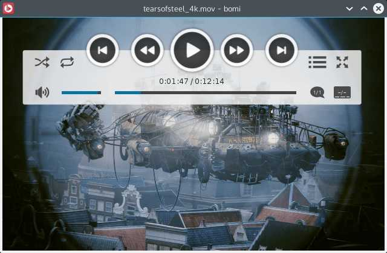

| description: A powerful, easy-to-use Qt5 GUI multimedia player based on mpv url: http://bomi-player.github.io license: 'GPL' depends: qt5-base qt5-declarative qt5-x11extras qt5-quickcontrols icu libdvdread libdvdnav libcdio-paranoia libcdio alsa-lib pulseaudio jack libchardet libbluray mpg123 libva libgl fribidi libass ffmpeg makedepends: created_at: Saturday Feb 28, 2015 at 04:31 pushed_at: Wednesday Feb 10, 2016 at 03:36 |  |